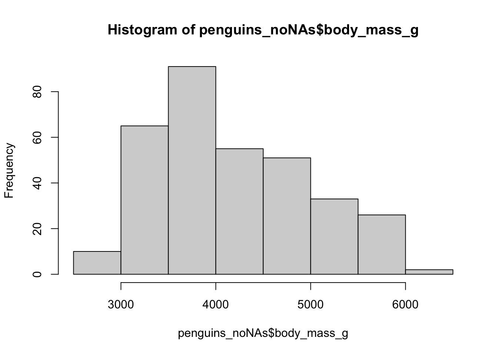
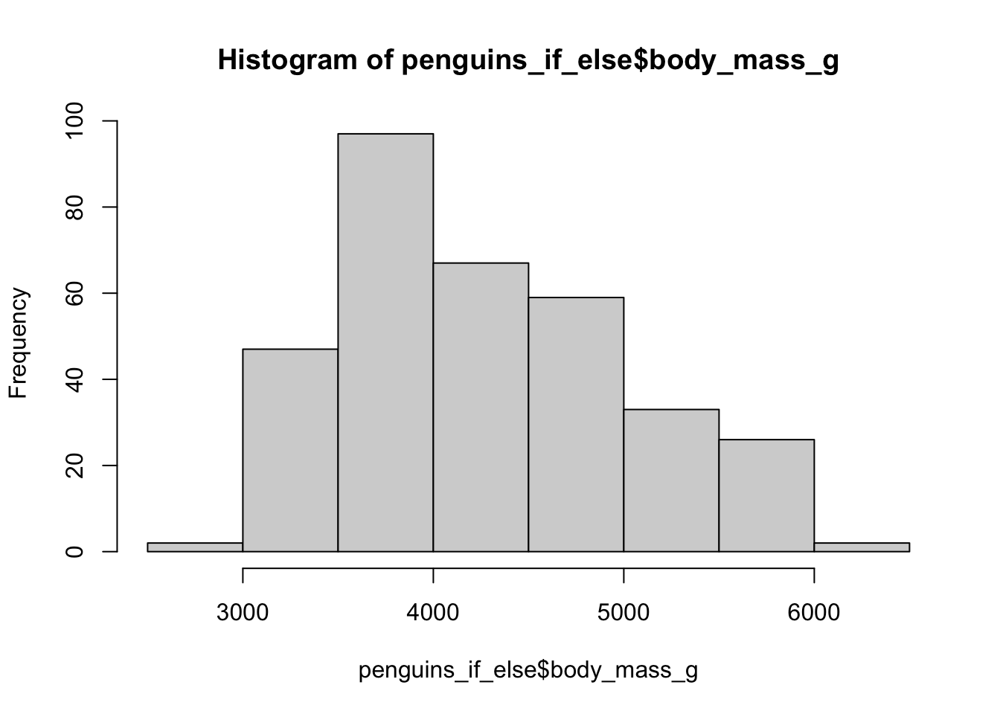
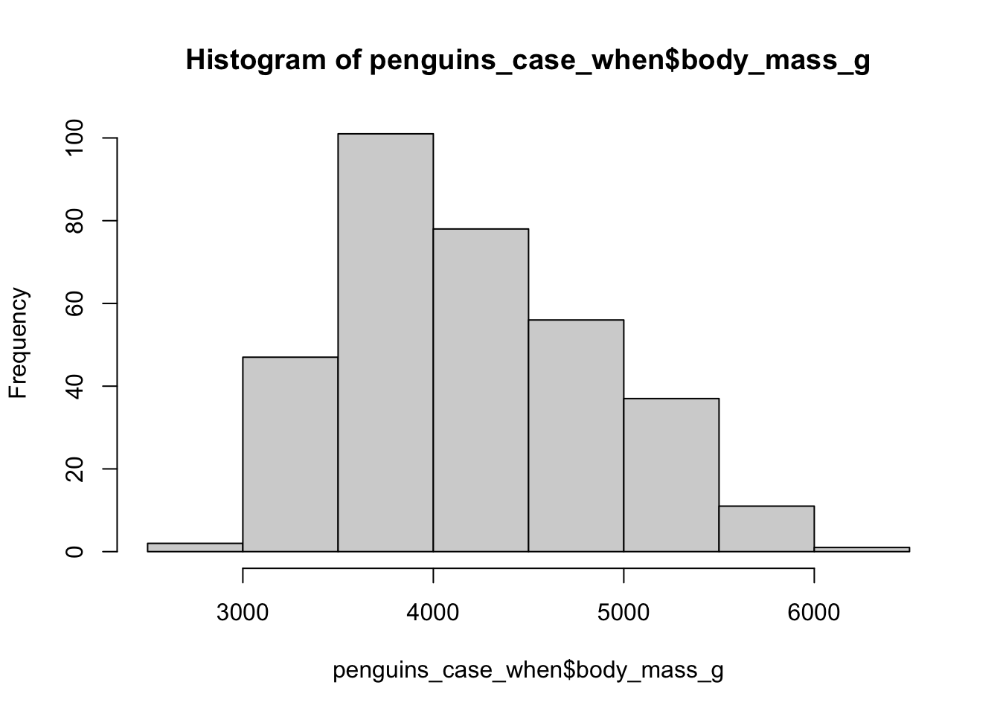

#install.packages("palmerpenguins")
library(palmerpenguins)
data(penguins)Data Manipulation with Real World Data in R
Real World Data
Overview of Data
Packages often have their own example datasets within them, or a package can be used to store just data without functions etc.
We will look at the palmer penguins dataset
This becomes a ‘promise’ of a data set, we have to do something with it to get it properly, lets take a look inside
library(dplyr)
Attaching package: 'dplyr'The following objects are masked from 'package:stats':
filter, lagThe following objects are masked from 'package:base':
intersect, setdiff, setequal, unionglimpse(penguins)Rows: 344
Columns: 8
$ species <fct> Adelie, Adelie, Adelie, Adelie, Adelie, Adelie, Adel…
$ island <fct> Torgersen, Torgersen, Torgersen, Torgersen, Torgerse…
$ bill_length_mm <dbl> 39.1, 39.5, 40.3, NA, 36.7, 39.3, 38.9, 39.2, 34.1, …
$ bill_depth_mm <dbl> 18.7, 17.4, 18.0, NA, 19.3, 20.6, 17.8, 19.6, 18.1, …
$ flipper_length_mm <int> 181, 186, 195, NA, 193, 190, 181, 195, 193, 190, 186…
$ body_mass_g <int> 3750, 3800, 3250, NA, 3450, 3650, 3625, 4675, 3475, …
$ sex <fct> male, female, female, NA, female, male, female, male…
$ year <int> 2007, 2007, 2007, 2007, 2007, 2007, 2007, 2007, 2007…This gives us two datasets in our global environment
Using summary() we can see which columns have NAs and which don’t.
summary(penguins) species island bill_length_mm bill_depth_mm
Adelie :152 Biscoe :168 Min. :32.10 Min. :13.10
Chinstrap: 68 Dream :124 1st Qu.:39.23 1st Qu.:15.60
Gentoo :124 Torgersen: 52 Median :44.45 Median :17.30
Mean :43.92 Mean :17.15
3rd Qu.:48.50 3rd Qu.:18.70
Max. :59.60 Max. :21.50
NA's :2 NA's :2
flipper_length_mm body_mass_g sex year
Min. :172.0 Min. :2700 female:165 Min. :2007
1st Qu.:190.0 1st Qu.:3550 male :168 1st Qu.:2007
Median :197.0 Median :4050 NA's : 11 Median :2008
Mean :200.9 Mean :4202 Mean :2008
3rd Qu.:213.0 3rd Qu.:4750 3rd Qu.:2009
Max. :231.0 Max. :6300 Max. :2009
NA's :2 NA's :2 The penguins data set is fairly well organised but we can still do a bit more with it if we want
summary(penguins_raw) studyName Sample Number Species Region
Length:344 Min. : 1.00 Length:344 Length:344
Class :character 1st Qu.: 29.00 Class :character Class :character
Mode :character Median : 58.00 Mode :character Mode :character
Mean : 63.15
3rd Qu.: 95.25
Max. :152.00
Island Stage Individual ID Clutch Completion
Length:344 Length:344 Length:344 Length:344
Class :character Class :character Class :character Class :character
Mode :character Mode :character Mode :character Mode :character
Date Egg Culmen Length (mm) Culmen Depth (mm) Flipper Length (mm)
Min. :2007-11-09 Min. :32.10 Min. :13.10 Min. :172.0
1st Qu.:2007-11-28 1st Qu.:39.23 1st Qu.:15.60 1st Qu.:190.0
Median :2008-11-09 Median :44.45 Median :17.30 Median :197.0
Mean :2008-11-27 Mean :43.92 Mean :17.15 Mean :200.9
3rd Qu.:2009-11-16 3rd Qu.:48.50 3rd Qu.:18.70 3rd Qu.:213.0
Max. :2009-12-01 Max. :59.60 Max. :21.50 Max. :231.0
NA's :2 NA's :2 NA's :2
Body Mass (g) Sex Delta 15 N (o/oo) Delta 13 C (o/oo)
Min. :2700 Length:344 Min. : 7.632 Min. :-27.02
1st Qu.:3550 Class :character 1st Qu.: 8.300 1st Qu.:-26.32
Median :4050 Mode :character Median : 8.652 Median :-25.83
Mean :4202 Mean : 8.733 Mean :-25.69
3rd Qu.:4750 3rd Qu.: 9.172 3rd Qu.:-25.06
Max. :6300 Max. :10.025 Max. :-23.79
NA's :2 NA's :14 NA's :13
Comments
Length:344
Class :character
Mode :character
The raw data has a lot of extra information that may or may not be important for us. The raw data has lots of difficult to deal with column names.
All Hail Hadley Wickham: tidyverse
For almost all basic tasks in r I prefer and would recommend using the tidyverse, but there are many other packages for data manipulation, organisation, visualisation and analysis
Hadley Wickham is an amazing package writer and is heavily involved with creating the tidyverse, he is also amazing at explaining very complex things (Check out his Youtube).
The main drawbacks of the tidyverse are to do with speed at scale, tidyverse code is less efficient with big data (10s of Gigabytes)
The main advantages in my eyes is readability and intuition. Consistency of syntax (the order of arguments and naming of functions etc.) is also very important in the eyes of the tidyverse, where the main idea is using and aiming for what is called ‘tidy’ data.
What is ‘Tidy’ data?
From the original paper discussing this: “Tidy datasets provide a standardized way to link the structure of a dataset (its physical layout) with its semantics (its meaning).”
This means that Tidy data is a standard way of mapping the meaning of a dataset to its structure. A dataset is messy or tidy depending on how rows, columns and tables are matched up with observations, variables and types.
In tidy data:
Every column is a variable.
Every row is an observation.
Every cell is a single value.
Enough Theory - Using dplyr and tidyr
For data manipulation and organisation we will rely heavily on the dplyr and tidyr packages, which have a suite of functions that can be used in isolation or combined to perform complex data manipulation and organisation.
Easy to Read Code
For writing easy to follow and understand code/scripts with complex sequences of functions, putting our code across multiple lines is a technique we can use.
This can be done by doing an enter/carriage return after a comma inside of a function between arguments.
This technique changes nothing of how the function works (we can check if the two outputs are equal with all.equal())
df_without_enters<-data.frame(Column1=c(1.3,5.8,5.122,3.00,7.12),Column2=c(1,5,5,3,7))
df_with_enters<-data.frame(
Column1=c(1.3,5.8,5.122,3.00,7.12),
Column2=c(1,5,5,3,7)
)
all.equal(df_without_enters,df_with_enters)[1] TRUEPiping (Native and maggittr)
What do we do when we want to apply multiple functions in a sequence but don’t want to create loads of objects in our global environment (where are stores temporarily saved objects)?
One option is putting one function inside of another etc (Sometimes fine).
NestingFunctions<-summary(subset(df_with_enters, Column1==1.3))This can be okay but generally is hard to follow.
In R there is an operator that allows you to pass the result from one function into the next function this I called the Native Pipe |>
Again we can check this creates the same thing with all.equal()
NativePipingingFunctions<-subset(df_with_enters, Column1==1.3)|>
summary()
all.equal(NestingFunctions,NativePipingingFunctions)[1] TRUEThis operator is actually quite new and was based on another commonly used pipe (and more superior in my mind).
The magittr pipe %>% (shift+cmd+m or shift+ctrl+m) was from a package called maggittr that is automatically loaded by any tidyverse packages.
It works very similarly to the native pipe with some subtle changes, but again the use is easier to read when there are the differences.
MaggittrPipingingFunctions<-subset(df_with_enters, Column1==1.3) %>%
summary()
all.equal(MaggittrPipingingFunctions,NativePipingingFunctions)[1] TRUEWhen using one function it is not needed, but when using multiple functions in a row piping makes code a lot easier to read and understand what order functions have been carried out in.
Again this readability has drawbacks in being slower (for small data of 100s of rows this may be 0.0001 of a second but big data 10000000000s of rows it might be a few seconds)
Filtering
filter() is a row wise subsetting based on a statement from the dataframe.
When we looked at the summary() of penguins we saw some NAs in the biometric columns and also in the sex column.
So we only have to remove two rows to remove the NAs in the biometrics columns, there are more NA’s in the sex column.
If we want to remove NA’s there are many ways, to be selective we can filter our dataset
To subset data we can use the filter() function from the dplyr package, we create a logic clause that then filters the dataset by that clause/statement,
For example if we want to select all rows of the data set where the data is from a female penguin we can do this by
female_penguins<- penguins %>%
filter(sex=="female")
female_penguins# A tibble: 165 × 8
species island bill_length_mm bill_depth_mm flipper_length_mm body_mass_g
<fct> <fct> <dbl> <dbl> <int> <int>
1 Adelie Torgersen 39.5 17.4 186 3800
2 Adelie Torgersen 40.3 18 195 3250
3 Adelie Torgersen 36.7 19.3 193 3450
4 Adelie Torgersen 38.9 17.8 181 3625
5 Adelie Torgersen 41.1 17.6 182 3200
6 Adelie Torgersen 36.6 17.8 185 3700
7 Adelie Torgersen 38.7 19 195 3450
8 Adelie Torgersen 34.4 18.4 184 3325
9 Adelie Biscoe 37.8 18.3 174 3400
10 Adelie Biscoe 35.9 19.2 189 3800
# ℹ 155 more rows
# ℹ 2 more variables: sex <fct>, year <int>or we might want all the penguins above 5 kg
heavier_penguins<- penguins %>%
filter(body_mass_g>= 5000)
heavier_penguins# A tibble: 67 × 8
species island bill_length_mm bill_depth_mm flipper_length_mm body_mass_g
<fct> <fct> <dbl> <dbl> <int> <int>
1 Gentoo Biscoe 50 16.3 230 5700
2 Gentoo Biscoe 50 15.2 218 5700
3 Gentoo Biscoe 47.6 14.5 215 5400
4 Gentoo Biscoe 46.7 15.3 219 5200
5 Gentoo Biscoe 46.8 15.4 215 5150
6 Gentoo Biscoe 49 16.1 216 5550
7 Gentoo Biscoe 48.4 14.6 213 5850
8 Gentoo Biscoe 49.3 15.7 217 5850
9 Gentoo Biscoe 49.2 15.2 221 6300
10 Gentoo Biscoe 48.7 15.1 222 5350
# ℹ 57 more rows
# ℹ 2 more variables: sex <fct>, year <int>There are a range of symbols we can use such as more than >, less than <, more than or equal to >=, less than or equal to <=, is equal to ==, and &, or |.
We can even use multiple clauses or statements in one call to filter,
So if we want all the heavier female penguins
heavier_female_penguins<- penguins %>%
filter(body_mass_g>= 5000 & sex=="female")
heavier_female_penguins# A tibble: 8 × 8
species island bill_length_mm bill_depth_mm flipper_length_mm body_mass_g
<fct> <fct> <dbl> <dbl> <int> <int>
1 Gentoo Biscoe 45.1 14.5 215 5000
2 Gentoo Biscoe 42.9 13.1 215 5000
3 Gentoo Biscoe 45.1 14.5 207 5050
4 Gentoo Biscoe 49.1 14.8 220 5150
5 Gentoo Biscoe 44.9 13.3 213 5100
6 Gentoo Biscoe 46.5 14.8 217 5200
7 Gentoo Biscoe 50.5 15.2 216 5000
8 Gentoo Biscoe 45.2 14.8 212 5200
# ℹ 2 more variables: sex <fct>, year <int>Sometimes we might want to filter with multiple answers of a categorical variable,
For example if we wanted all penguins from Biscoe and Torgersen island
To do this we can make a vector of the names we want, then filter by that vector
Islands_we_Want<-c("Biscoe","Torgersen")
Biscoe_Torgersen_penguins<- penguins %>%
filter(island%in%Islands_we_Want)
Biscoe_Torgersen_penguins# A tibble: 220 × 8
species island bill_length_mm bill_depth_mm flipper_length_mm body_mass_g
<fct> <fct> <dbl> <dbl> <int> <int>
1 Adelie Torgersen 39.1 18.7 181 3750
2 Adelie Torgersen 39.5 17.4 186 3800
3 Adelie Torgersen 40.3 18 195 3250
4 Adelie Torgersen NA NA NA NA
5 Adelie Torgersen 36.7 19.3 193 3450
6 Adelie Torgersen 39.3 20.6 190 3650
7 Adelie Torgersen 38.9 17.8 181 3625
8 Adelie Torgersen 39.2 19.6 195 4675
9 Adelie Torgersen 34.1 18.1 193 3475
10 Adelie Torgersen 42 20.2 190 4250
# ℹ 210 more rows
# ℹ 2 more variables: sex <fct>, year <int>Here we will make use of ! this means the opposite of the clause (not this)
We also use %in% which is used to tell filter there are more than one element
or NAs that we want to get rid of as NA is not classed like normal data
penguins_someNAs<-penguins %>%
filter(!body_mass_g%in%NA)If we now look at the number of rows of the datasets we can see only two rows were removed. (not all the NAs)
nrow(penguins)[1] 344nrow(penguins_someNAs)[1] 342summary(penguins_someNAs) species island bill_length_mm bill_depth_mm
Adelie :151 Biscoe :167 Min. :32.10 Min. :13.10
Chinstrap: 68 Dream :124 1st Qu.:39.23 1st Qu.:15.60
Gentoo :123 Torgersen: 51 Median :44.45 Median :17.30
Mean :43.92 Mean :17.15
3rd Qu.:48.50 3rd Qu.:18.70
Max. :59.60 Max. :21.50
flipper_length_mm body_mass_g sex year
Min. :172.0 Min. :2700 female:165 Min. :2007
1st Qu.:190.0 1st Qu.:3550 male :168 1st Qu.:2007
Median :197.0 Median :4050 NA's : 9 Median :2008
Mean :200.9 Mean :4202 Mean :2008
3rd Qu.:213.0 3rd Qu.:4750 3rd Qu.:2009
Max. :231.0 Max. :6300 Max. :2009 Still 9 NAs in sex
penguins_noNAs<-penguins_someNAs %>%
filter(!sex%in%NA)
summary(penguins_noNAs) species island bill_length_mm bill_depth_mm
Adelie :146 Biscoe :163 Min. :32.10 Min. :13.10
Chinstrap: 68 Dream :123 1st Qu.:39.50 1st Qu.:15.60
Gentoo :119 Torgersen: 47 Median :44.50 Median :17.30
Mean :43.99 Mean :17.16
3rd Qu.:48.60 3rd Qu.:18.70
Max. :59.60 Max. :21.50
flipper_length_mm body_mass_g sex year
Min. :172 Min. :2700 female:165 Min. :2007
1st Qu.:190 1st Qu.:3550 male :168 1st Qu.:2007
Median :197 Median :4050 Median :2008
Mean :201 Mean :4207 Mean :2008
3rd Qu.:213 3rd Qu.:4775 3rd Qu.:2009
Max. :231 Max. :6300 Max. :2009 All sorted
Selecting
select() is a column wise subsetting based on a statement of column names.
So we can select or deselect a few named columns using select
We can use - or ! to say not this column/statement.
Three_Columns<-penguins_raw %>%
select(studyName,Species,Island)
All_But_Three_Columns<-penguins_raw %>%
select(-studyName,-Species,-Island)
names(Three_Columns)[1] "studyName" "Species" "Island" names(All_But_Three_Columns) [1] "Sample Number" "Region" "Stage"
[4] "Individual ID" "Clutch Completion" "Date Egg"
[7] "Culmen Length (mm)" "Culmen Depth (mm)" "Flipper Length (mm)"
[10] "Body Mass (g)" "Sex" "Delta 15 N (o/oo)"
[13] "Delta 13 C (o/oo)" "Comments" We can also use a statement for consistencies across columns
For example all columns that contain() an “s” or even combining a statement with other specific selections
S_Columns<-penguins_raw %>%
select(contains("s"))
S_Columns_No_Sex<-penguins_raw %>%
select(contains("s"),-Sex)
S_Columns_Plus_Region<-penguins_raw %>%
select(contains("s"),Region)
names(S_Columns)[1] "studyName" "Sample Number" "Species" "Island"
[5] "Stage" "Body Mass (g)" "Sex" "Comments" names(S_Columns_No_Sex)[1] "studyName" "Sample Number" "Species" "Island"
[5] "Stage" "Body Mass (g)" "Comments" names(S_Columns_Plus_Region)[1] "studyName" "Sample Number" "Species" "Island"
[5] "Stage" "Body Mass (g)" "Sex" "Comments"
[9] "Region" We can even make a vector of column names and then pass that vector to select() using the all_of() or any_of() functions.
Columns_We_Want<-c("Region","Island","studyName","Stage")
Columns_From_Vector<-penguins_raw %>%
select(all_of(Columns_We_Want))
Columns_Not_From_Vector<-penguins_raw %>%
select(-all_of(Columns_We_Want))
names(Columns_From_Vector)[1] "Region" "Island" "studyName" "Stage" names(Columns_Not_From_Vector) [1] "Sample Number" "Species" "Individual ID"
[4] "Clutch Completion" "Date Egg" "Culmen Length (mm)"
[7] "Culmen Depth (mm)" "Flipper Length (mm)" "Body Mass (g)"
[10] "Sex" "Delta 15 N (o/oo)" "Delta 13 C (o/oo)"
[13] "Comments" Another nice feature of select is that the order is maintained, so the order of things we select is used to order the columns,
So if we want to move a certain column towards the beginning of the df we can do this using select() and put everything() to say everything else after the columns we put first
Region_First<-penguins_raw %>%
select(Region,everything())
Region_Then_Island_First<-penguins_raw %>%
select(Region,Island,everything())
names(penguins_raw) [1] "studyName" "Sample Number" "Species"
[4] "Region" "Island" "Stage"
[7] "Individual ID" "Clutch Completion" "Date Egg"
[10] "Culmen Length (mm)" "Culmen Depth (mm)" "Flipper Length (mm)"
[13] "Body Mass (g)" "Sex" "Delta 15 N (o/oo)"
[16] "Delta 13 C (o/oo)" "Comments" names(Region_First) [1] "Region" "studyName" "Sample Number"
[4] "Species" "Island" "Stage"
[7] "Individual ID" "Clutch Completion" "Date Egg"
[10] "Culmen Length (mm)" "Culmen Depth (mm)" "Flipper Length (mm)"
[13] "Body Mass (g)" "Sex" "Delta 15 N (o/oo)"
[16] "Delta 13 C (o/oo)" "Comments" names(Region_Then_Island_First) [1] "Region" "Island" "studyName"
[4] "Sample Number" "Species" "Stage"
[7] "Individual ID" "Clutch Completion" "Date Egg"
[10] "Culmen Length (mm)" "Culmen Depth (mm)" "Flipper Length (mm)"
[13] "Body Mass (g)" "Sex" "Delta 15 N (o/oo)"
[16] "Delta 13 C (o/oo)" "Comments" Mutating
We have data but maybe we want to transform that data and either replace the original column or create a new column.
We can use mutate() to do this.
Lets convert the body mass column into a new column that is in kg.
penguins_kgbodymass<-penguins %>%
mutate(body_mass_kg=body_mass_g/1000)
summary(penguins_kgbodymass) species island bill_length_mm bill_depth_mm
Adelie :152 Biscoe :168 Min. :32.10 Min. :13.10
Chinstrap: 68 Dream :124 1st Qu.:39.23 1st Qu.:15.60
Gentoo :124 Torgersen: 52 Median :44.45 Median :17.30
Mean :43.92 Mean :17.15
3rd Qu.:48.50 3rd Qu.:18.70
Max. :59.60 Max. :21.50
NA's :2 NA's :2
flipper_length_mm body_mass_g sex year body_mass_kg
Min. :172.0 Min. :2700 female:165 Min. :2007 Min. :2.700
1st Qu.:190.0 1st Qu.:3550 male :168 1st Qu.:2007 1st Qu.:3.550
Median :197.0 Median :4050 NA's : 11 Median :2008 Median :4.050
Mean :200.9 Mean :4202 Mean :2008 Mean :4.202
3rd Qu.:213.0 3rd Qu.:4750 3rd Qu.:2009 3rd Qu.:4.750
Max. :231.0 Max. :6300 Max. :2009 Max. :6.300
NA's :2 NA's :2 NA's :2 We can also paste information from other columns together into another
We shall use the paste() function then we will put what character we want to separate each element by using the sep argument.
penguins_ExtraInfo<-penguins_noNAs %>%
mutate(Info=paste(species,island,sex,sep="_"))
unique(penguins_ExtraInfo$Info) [1] "Adelie_Torgersen_male" "Adelie_Torgersen_female"
[3] "Adelie_Biscoe_female" "Adelie_Biscoe_male"
[5] "Adelie_Dream_female" "Adelie_Dream_male"
[7] "Gentoo_Biscoe_female" "Gentoo_Biscoe_male"
[9] "Chinstrap_Dream_female" "Chinstrap_Dream_male" We can even do calculations that are based on element in another column at the same row.
There are a few ways to do this, the simplest is an if_else() statement.
with if_else() there are three arguments, the first argument is the statement (is it female), the second argument is what to do if the statement is true, and the third argument is what to do if the statement is false.
Lets pretend that when an Adelie penguin was studied they were incorrectly weighed by 200 g.
We shall replace the old body_mass_g with new corrected weight, but only for Adelie penguins.
To look at the change we will plot a histogram of body weights for both weights.
penguins_if_else<-penguins_noNAs %>%
mutate(body_mass_g=if_else(species=="Adelie",body_mass_g+200,body_mass_g))
hist(penguins_noNAs$body_mass_g)
hist(penguins_if_else$body_mass_g)
While fine for one single statement, multiple if_else() statements can create horrible code,
For this we can use case_when()
Maybe Gentoos were also miss-measured but the other way round (too big)
penguins_case_when<-penguins_noNAs %>%
mutate(body_mass_g=case_when(species=="Adelie"~body_mass_g+200,
species=="Gentoo"~body_mass_g-200,
species=="Chinstrap"~body_mass_g))
hist(penguins_noNAs$body_mass_g)hist(penguins_case_when$body_mass_g)
Summarise by Groups
Often we will want to see summaries of data across groups, using a combination of group_by() and summarise() can give use these summary stats.
we can group by one, two or many columns, the more groups the less data will summarised in each group.
If we don’t group by a column it will not be in the final dataset.
penguins_noNAs %>%
group_by(year) %>%
summarise(Mean_body_mass=mean(body_mass_g))# A tibble: 3 × 2
year Mean_body_mass
<int> <dbl>
1 2007 4153.
2 2008 4263.
3 2009 4200.penguins_noNAs %>%
group_by(year,species) %>%
summarise(Mean_body_mass=mean(body_mass_g))`summarise()` has grouped output by 'year'. You can override using the
`.groups` argument.# A tibble: 9 × 3
# Groups: year [3]
year species Mean_body_mass
<int> <fct> <dbl>
1 2007 Adelie 3714.
2 2007 Chinstrap 3694.
3 2007 Gentoo 5100
4 2008 Adelie 3742
5 2008 Chinstrap 3800
6 2008 Gentoo 5028.
7 2009 Adelie 3665.
8 2009 Chinstrap 3725
9 2009 Gentoo 5157.penguins_noNAs %>%
group_by(year,species, island) %>%
summarise(Mean_body_mass=mean(body_mass_g))`summarise()` has grouped output by 'year', 'species'. You can override using
the `.groups` argument.# A tibble: 15 × 4
# Groups: year, species [9]
year species island Mean_body_mass
<int> <fct> <fct> <dbl>
1 2007 Adelie Biscoe 3620
2 2007 Adelie Dream 3708.
3 2007 Adelie Torgersen 3785
4 2007 Chinstrap Dream 3694.
5 2007 Gentoo Biscoe 5100
6 2008 Adelie Biscoe 3628.
7 2008 Adelie Dream 3756.
8 2008 Adelie Torgersen 3856.
9 2008 Chinstrap Dream 3800
10 2008 Gentoo Biscoe 5028.
11 2009 Adelie Biscoe 3858.
12 2009 Adelie Dream 3651.
13 2009 Adelie Torgersen 3489.
14 2009 Chinstrap Dream 3725
15 2009 Gentoo Biscoe 5157.penguins_noNAs %>%
group_by(year,species, island,sex) %>%
summarise(Mean_body_mass=mean(body_mass_g))`summarise()` has grouped output by 'year', 'species', 'island'. You can
override using the `.groups` argument.# A tibble: 30 × 5
# Groups: year, species, island [15]
year species island sex Mean_body_mass
<int> <fct> <fct> <fct> <dbl>
1 2007 Adelie Biscoe female 3470
2 2007 Adelie Biscoe male 3770
3 2007 Adelie Dream female 3269.
4 2007 Adelie Dream male 4102.
5 2007 Adelie Torgersen female 3475
6 2007 Adelie Torgersen male 4139.
7 2007 Chinstrap Dream female 3569.
8 2007 Chinstrap Dream male 3819.
9 2007 Gentoo Biscoe female 4619.
10 2007 Gentoo Biscoe male 5553.
# ℹ 20 more rowsWe can also use groups to count numbers of rows within each group.
penguins_noNAs %>%
group_by(year,species,island,sex) %>%
summarise(Number=n())`summarise()` has grouped output by 'year', 'species', 'island'. You can
override using the `.groups` argument.# A tibble: 30 × 5
# Groups: year, species, island [15]
year species island sex Number
<int> <fct> <fct> <fct> <int>
1 2007 Adelie Biscoe female 5
2 2007 Adelie Biscoe male 5
3 2007 Adelie Dream female 9
4 2007 Adelie Dream male 10
5 2007 Adelie Torgersen female 8
6 2007 Adelie Torgersen male 7
7 2007 Chinstrap Dream female 13
8 2007 Chinstrap Dream male 13
9 2007 Gentoo Biscoe female 16
10 2007 Gentoo Biscoe male 17
# ℹ 20 more rowsWide and Long Data
Tidy data is generally in what could be considered a long format, where each row is an individual observations often having a column that repeats itself.
But for some visualisation tools or for making nice looking tables it might be better to be in wide format.
Lets take some of the summaries from above to create a wide database from our last summary which was hard to read because of its length.
To go between wide and long data we will use pivot functions from tidyr, namely pivot_wider() and pivot_longer().
#install.packages("tidyr")
library(tidyr)
penguins_noNAs %>%
group_by(year,species, island,sex) %>%
summarise(Mean_body_mass=mean(body_mass_g)) %>%
pivot_wider(names_from = species, values_from = Mean_body_mass)`summarise()` has grouped output by 'year', 'species', 'island'. You can
override using the `.groups` argument.# A tibble: 18 × 6
# Groups: year, island [9]
year island sex Adelie Chinstrap Gentoo
<int> <fct> <fct> <dbl> <dbl> <dbl>
1 2007 Biscoe female 3470 NA 4619.
2 2007 Biscoe male 3770 NA 5553.
3 2007 Dream female 3269. 3569. NA
4 2007 Dream male 4102. 3819. NA
5 2007 Torgersen female 3475 NA NA
6 2007 Torgersen male 4139. NA NA
7 2008 Biscoe female 3244. NA 4627.
8 2008 Biscoe male 4011. NA 5411.
9 2008 Dream female 3412. 3472. NA
10 2008 Dream male 4100 4128. NA
11 2008 Torgersen female 3519. NA NA
12 2008 Torgersen male 4194. NA NA
13 2009 Biscoe female 3447. NA 4786.
14 2009 Biscoe male 4269. NA 5511.
15 2009 Dream female 3358. 3523. NA
16 2009 Dream male 3945 3927. NA
17 2009 Torgersen female 3194. NA NA
18 2009 Torgersen male 3784. NA NA It is still quite long but we could also add more info into the wider columns (e.g. year or sex)
penguins_noNAs %>%
group_by(year,species, island,sex) %>%
summarise(Mean_body_mass=mean(body_mass_g)) %>%
pivot_wider(names_from = c(species,year), values_from = Mean_body_mass)`summarise()` has grouped output by 'year', 'species', 'island'. You can
override using the `.groups` argument.# A tibble: 6 × 11
# Groups: island [3]
island sex Adelie_2007 Chinstrap_2007 Gentoo_2007 Adelie_2008 Chinstrap_2008
<fct> <fct> <dbl> <dbl> <dbl> <dbl> <dbl>
1 Biscoe fema… 3470 NA 4619. 3244. NA
2 Biscoe male 3770 NA 5553. 4011. NA
3 Dream fema… 3269. 3569. NA 3412. 3472.
4 Dream male 4102. 3819. NA 4100 4128.
5 Torge… fema… 3475 NA NA 3519. NA
6 Torge… male 4139. NA NA 4194. NA
# ℹ 4 more variables: Gentoo_2008 <dbl>, Adelie_2009 <dbl>,
# Chinstrap_2009 <dbl>, Gentoo_2009 <dbl>penguins_noNAs %>%
group_by(year,species, island,sex) %>%
summarise(Mean_body_mass=mean(body_mass_g)) %>%
pivot_wider(names_from = c(species,sex), values_from = Mean_body_mass)`summarise()` has grouped output by 'year', 'species', 'island'. You can
override using the `.groups` argument.# A tibble: 9 × 8
# Groups: year, island [9]
year island Adelie_female Adelie_male Chinstrap_female Chinstrap_male
<int> <fct> <dbl> <dbl> <dbl> <dbl>
1 2007 Biscoe 3470 3770 NA NA
2 2007 Dream 3269. 4102. 3569. 3819.
3 2007 Torgersen 3475 4139. NA NA
4 2008 Biscoe 3244. 4011. NA NA
5 2008 Dream 3412. 4100 3472. 4128.
6 2008 Torgersen 3519. 4194. NA NA
7 2009 Biscoe 3447. 4269. NA NA
8 2009 Dream 3358. 3945 3523. 3927.
9 2009 Torgersen 3194. 3784. NA NA
# ℹ 2 more variables: Gentoo_female <dbl>, Gentoo_male <dbl>Often as ecologists we will be surveying a whole community and counting numbers of each different species at each site.
This data often comes to us as wide data, our summary of counts could be turned into a wide df (we will fill NAs as 0s) and we can the convert it back to a long dataframe.
WideCounts<-penguins_noNAs %>%
group_by(year,species,island,sex) %>%
summarise(Number=n()) %>%
pivot_wider(names_from = species,values_from = Number, values_fill = 0)`summarise()` has grouped output by 'year', 'species', 'island'. You can
override using the `.groups` argument.WideCounts# A tibble: 18 × 6
# Groups: year, island [9]
year island sex Adelie Chinstrap Gentoo
<int> <fct> <fct> <int> <int> <int>
1 2007 Biscoe female 5 0 16
2 2007 Biscoe male 5 0 17
3 2007 Dream female 9 13 0
4 2007 Dream male 10 13 0
5 2007 Torgersen female 8 0 0
6 2007 Torgersen male 7 0 0
7 2008 Biscoe female 9 0 22
8 2008 Biscoe male 9 0 23
9 2008 Dream female 8 9 0
10 2008 Dream male 8 9 0
11 2008 Torgersen female 8 0 0
12 2008 Torgersen male 8 0 0
13 2009 Biscoe female 8 0 20
14 2009 Biscoe male 8 0 21
15 2009 Dream female 10 12 0
16 2009 Dream male 10 12 0
17 2009 Torgersen female 8 0 0
18 2009 Torgersen male 8 0 0Okay so we now have a count of different sexes of species of penguins measured in different years and islands
Lets make this data long, to do this we have to tell the function which columns are to be pivoted, and what we want to call the new columns.
We can either tell it which columns should or should not be pivoted, or we can even say which position columns to use with numbers. (using the colon means from one thing to the other thing)
LongCounts_1<-WideCounts %>%
pivot_longer(c(Adelie,Chinstrap,Gentoo),names_to = "species",values_to = "Number")
LongCounts_2<-WideCounts %>%
pivot_longer(-c(year,island,sex),names_to = "species",values_to = "Number")
LongCounts_3<-WideCounts %>%
pivot_longer(4:6,names_to = "species",values_to = "Number")
LongCounts_4<-WideCounts %>%
pivot_longer(-c(1:3),names_to = "species",values_to = "Number")Lets check they are all the same to finish off.
all.equal(
LongCounts_1,
LongCounts_2
)[1] TRUEall.equal(
LongCounts_3,
LongCounts_4
)[1] TRUEall.equal(
LongCounts_1,
LongCounts_4
)[1] TRUE